Battle presentation — what it actually looks like
2026-08-08, battle-graphics-audit lane · no shipped file edited ·
full inventory + ranked slate: docs/plans/battle-presentation-inventory.md
Captured with node tools/battle_shots.mjs --port=3000 --tag=audit --out=docs/qa/battle-audit
and node tools/arena_playtest.mjs --port=3000 --gpu --eval=<probe> —
real GL (not swiftshader), 1600×813, nomusic=1, seed 4242,
stage.frames asserted climbing before every capture.
director-slate.md Bet 10 — "attack lunges,
hit flash + shake, damage number motion, turn camera punch-ins, KO/victory beats" — already
shipped, on 2026-08-02. The user is looking at the result of that juice pass and calling it
unimpressive. Bet 10 is spent; what is left is structural.1 · The camera does not move — and it cannot
| measurement (89 samples, 3.0 s at rest) | value |
|---|---|
| camera position span, x / y / z | 0.0126 / 0.0024 / 0.0039 m |
| one screen pixel at 11.6 m, fov 34°, 813 px | 8.7 mm |
| total camera movement in 3 seconds | 1.4 px |
idle-drift periods (CFG.drift.px/py/pz) | 103 / 153 / 217 s |
| a meadow fight, at the shipped pacing | ~20–40 s |
One pose, built once (battle_stage3d.js:651) and copied back every frame
(:2094), looking at a fixed world point, never at the actor and never at the
target. The intro sweep runs once for 1050 ms and never again. On a turn change: nothing. On a
KO: a 0.19 m shake. On victory: nothing. The drift's full amplitude is 17 px but its cycle is
103 seconds — a player never sees one.
public/assets/battle/MANIFEST.md
states the contract in its own words: the four backdrop plates were generated to a prompt
containing the arena camera's exact height, tilt and fov, and "if the arena camera moves,
this paragraph moves with it and the plates are re-shot." The backdrop is one curved band
built around the rest pose alone. A camera language is not a tuning change to this stage —
it is incompatible with the way its world is drawn.2 · The four zones, as the player sees them
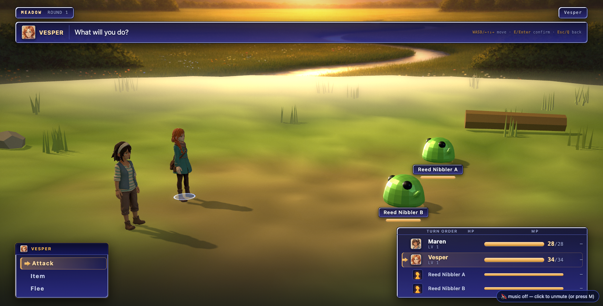
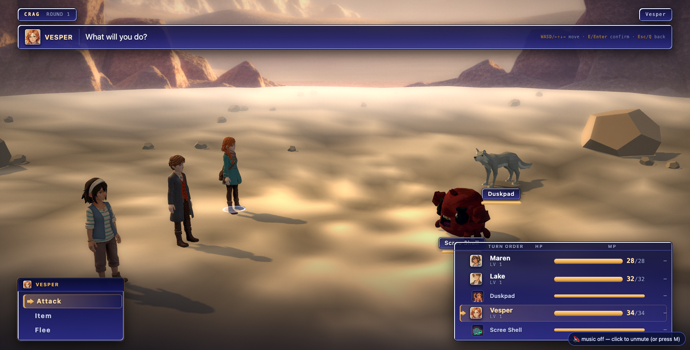
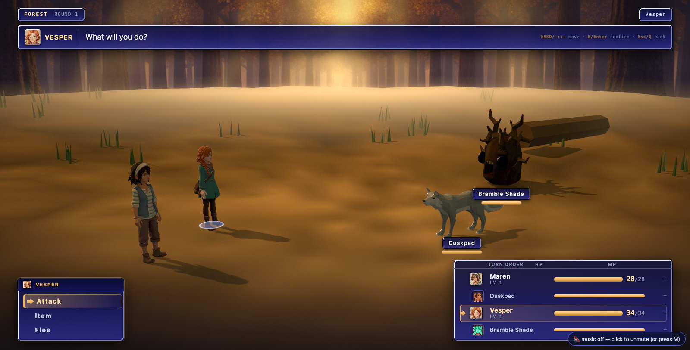
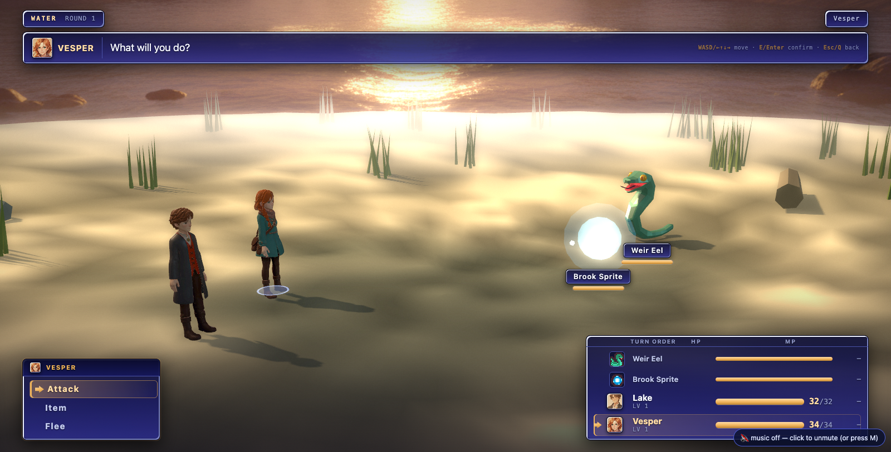
tools/genart.mjs
(gemini-2.5-flash-image) — the only pre-rendered art in this game not baked
through the repo's own Blender/Cycles/AgX plate pipeline. They are keyed to the zone
type, not the place. ow-valley/zones.json is a 224×160 grid over a
280×200 m tile: 35,840 cells, five zone types, four images.3 · The attacker never reaches the target
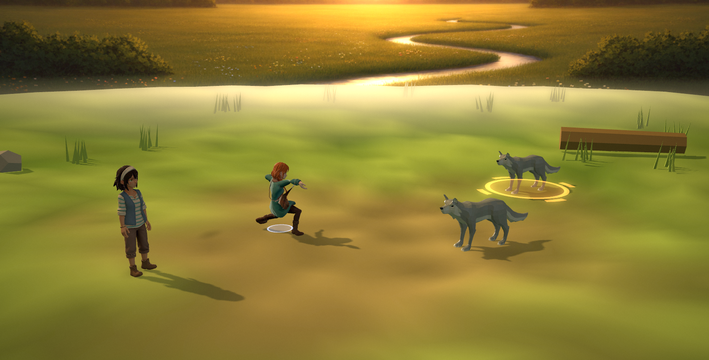
| the number this is | value |
|---|---|
| minimum party↔foe slot distance | 5.21 m |
| maximum | 9.47 m |
CFG.act.lungeM | 1.35 m |
| fraction of the gap the attacker covers | 25.9% |
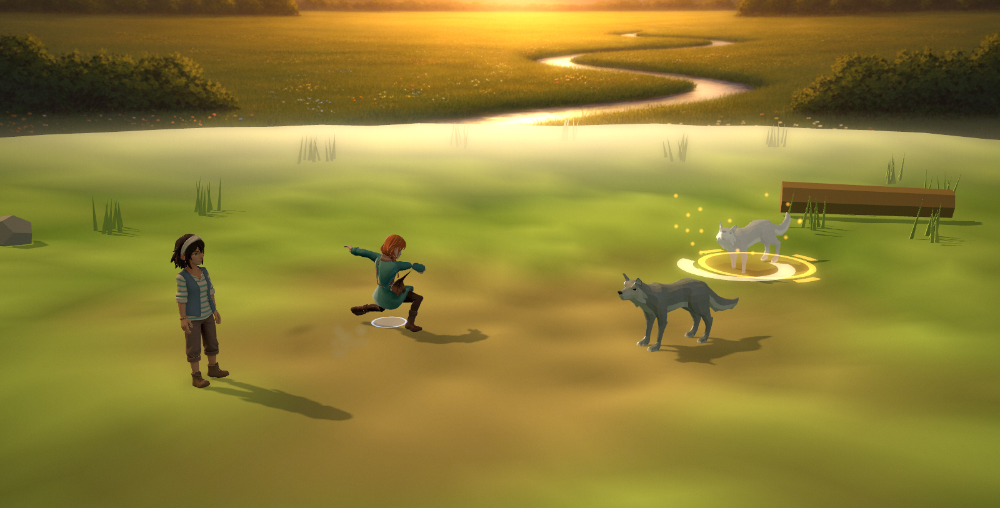
4 · The KO is an evaporation and the victory does not exist
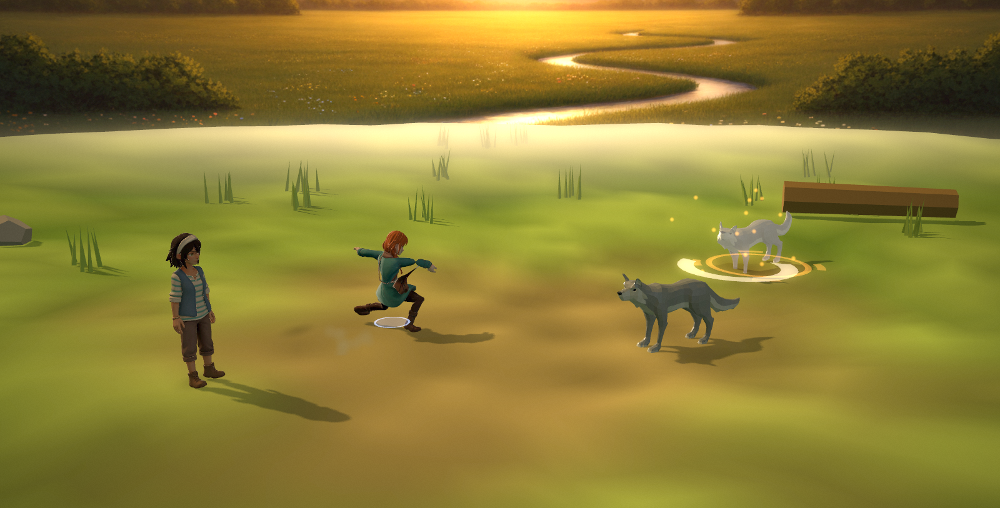
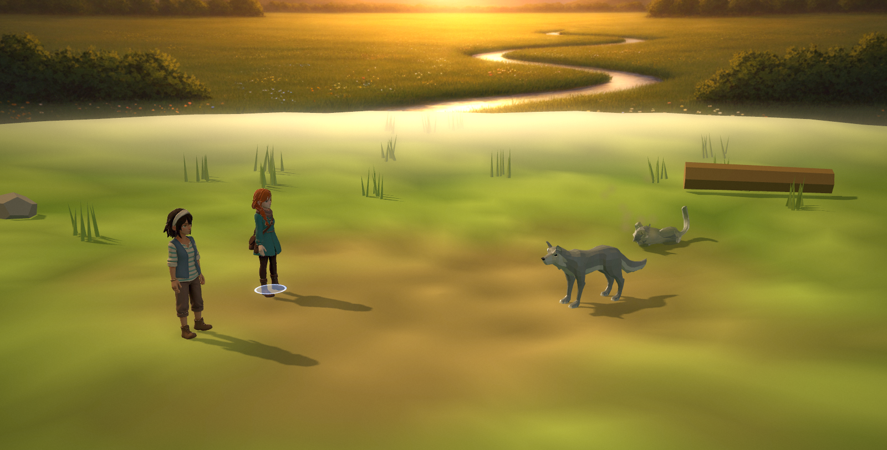
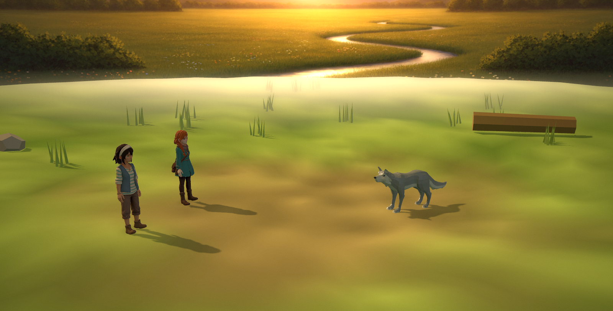
stage.cheer() — the victory pose of this game. Measured,
not guessed: stage.clipsOf() returns
["idle","attack","hit","die"] for every body. The stage asks for six intents;
cheer and item bind nothing on every character in the game, and
neither has a procedural fallback. flee returns before doing anything at all
(battle_stage3d.js:1661). Using a tonic is a body standing perfectly still while a
green number appears.5 · What the grade is covering for
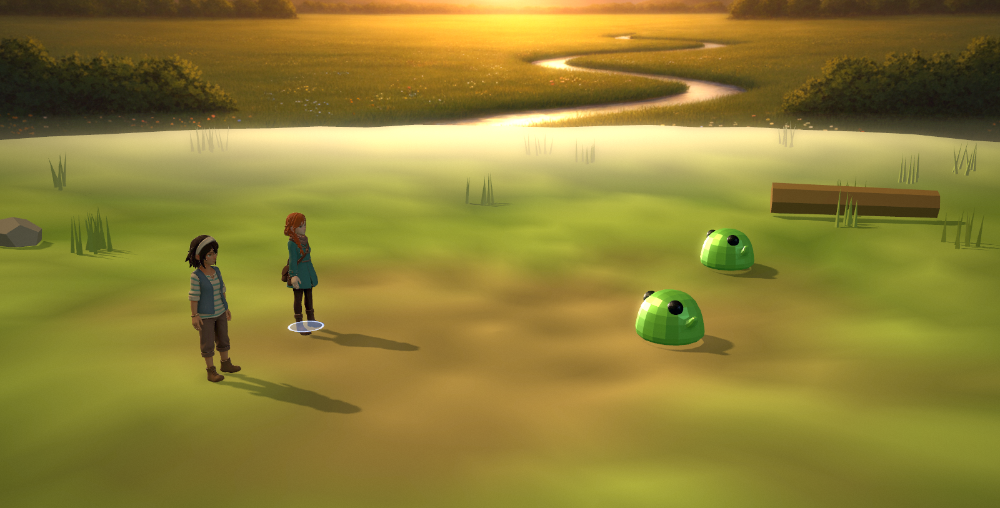
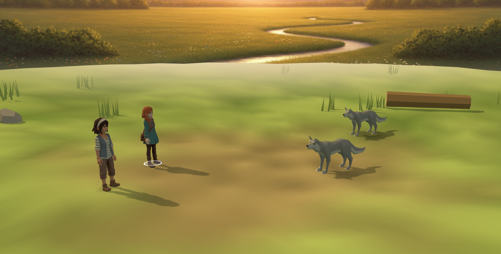
CFG.post.on = false — the same frame ungraded. The floor is a
pale wash with a beige smear where the "trodden centre" is, and the fog haze band at the seam
becomes an obvious pale bar. The grade is doing the work of hiding how flat the floor is
— a fine thing for a grade to do and a terrible thing to depend on.| arena census (one settled meadow battle, 2 party + 2 foes) | |
|---|---|
| meshes / triangles | 182 / 197,907 |
| of which procedural scatter (4-sided grass cones + 3 props) | 157 meshes |
| the ground | 1 mesh, MeshLambertMaterial({vertexColors}), 4,320 tris, no texture |
| materials carrying no texture map at all | 174 of 182 (95.6%) |
| normal maps / roughness maps in the whole scene | 2 / 2 |
scene.environment | null |
materials with an envMap | 0 |
renderer.toneMapping | NoToneMapping |
| lights | 5 (hemi 1.38, key 2.70, fill 0.69, rim 3.93, ambient 0.38) |
ow-valley — zones.json
exists for that scene alone, so the director no-ops everywhere else. ow-valley is a
real-time scene: honest geometry, a solved key, scene.environment = a PMREM
of the region's own sky, and the RT postfx family RenderPass → GTAO → bloom →
Output. At the instant a battle starts, the battle tears all of that down and builds a
second WebGL context containing a procedural disc, five hand-tuned lights, no environment map,
no AO and no tone mapping. The party rigs bring 9 MeshStandardMaterial and 1
MeshPhysicalMaterial into a scene with no environment for them to reflect —
the same character, in the same second, is lit by an IBL in the field and by a hemisphere in
the battle.6 · Two more measured joins
DPR asymmetry. battle_stage3d.js:610 calls
setPixelRatio(min(devicePixelRatio, 2)). play3d.html never calls
setPixelRatio at all — the field renders at CSS pixels. On a Retina display the
battle therefore draws 4× the fragments the field does, and nobody has priced it.
Headless at dpr 1 the arena idles at 120 fps, so this is not a measured problem — it is
an unmeasured one, and it belongs in the DPR lane's findings.
The turn-order panel disagrees with the field. Foe icons are the 16×16 placeholder sprites. Duskpad's icon is salmon-pink; the duskpad on the field is a grey wolf. Bramble Shade's icon is bright green; the model is a black root-ball. The panel that exists so the player can plan shows monsters in colours and shapes they do not have — next to 30 px painted busts for the party, two art registers in one table.
7 · What is already right — do not spend a bet re-doing these
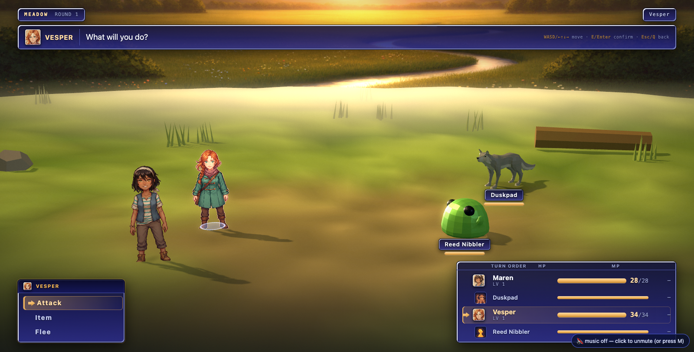
disable.partyModel — the party fall to their chroma-keyed
pose plates on camera-facing planes, bottom-anchored, casting cutout shadows.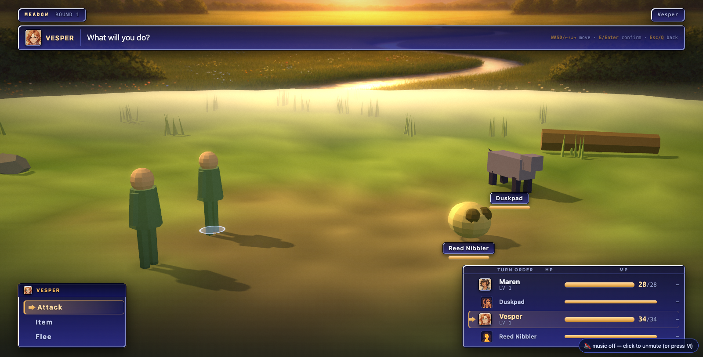
partyModel,foeModel,billboard killed — everything on procedural
proxy solids, still lit, still shadowed, still graded. No holes.GS); teardown is total and gated by
arena_playtest; and the cast shadows, rim light, grade, hit package, markers, turn
queue, pacing beats and victory tally are all shipped and all tuned against pictures. The
grade in particular is why the frames hold together at all. A rebuild that discards any of
this is a regression.8 · The slate, in one screen
| # | bet | changes | cost | risk |
|---|---|---|---|---|
| 1 | CONTACT | attacker travels to a strike station off the target's own body; damage timed to the clip's contact frame; hit-stop at impact | small | low |
| 2 | A CAMERA LANGUAGE | a shot table + solver: round / decide / strike / impact / KO / victory, with a 180°-rule that never crosses the axis | medium | medium — gated on the backdrop |
| 3 | FIGHT WHERE YOU STAND | borrow play3d's real ow-valley scene and camera; delete the dish, the four plates, the band, the second rig, the second context | large | high — play3d custody + 4 open post-battle queue tickets. Ship behind ?arena=world with the diorama as the fallback. |
| 4 | THE CAST FIGHTS | cheer / item / guard clips + a weapon socket fed by GS | medium | low |
| 5 | STAGING SOLVED AGAINST THE FRAME | slots chosen so bodies land in a target band, nothing under a window, the 36% hole closes | small–med | low |
| 6 | ONE LIGHT MODEL | the field's rig + a PMREM environment + the field's grade | low under #3 | the r185 colour-space trap, already paid once |
| 7 | KO / VICTORY ARE EVENTS | a hold, a dissolve, survivors reacting; a victory move and poses | low–med | depends on #2 and #4 |
| 8 | MONSTERS LOOK LIKE ONE GAME | one art direction for six creatures; foe icons rendered from the models | high (art) | low |
| 9 | BAKE THE DIORAMA FROM THE PLACE | only if #3 is refused — cine_bake a cube/wide plate per region, textured floor | high | it is the answer that already failed to satisfy once |
Sequencing. Wave 1 ships now and needs no ruling: #1 + #5 together, #4 in parallel
in the character factory — none of them touches play3d.html, needs a plate, or
needs a decision. Wave 2 needs a ruling: #3 behind a flag, and if granted #2 and #6
follow it almost for free, then #7. Wave 3: #8. #9 only if #3 is refused.
9 · Open questions
(a) Bet #3 or bet #9 — borrow the world, or keep a diorama and bake it from the real
place? Everything downstream depends on this one call.
(b) May the battle camera cut? seam-canon.md governs walk-triggered
camera changes in a town, and the battle screen is modal and non-navigational — so a cut on a
beat is arguably not a "passage". That reading should be confirmed before #2 ships cuts.
(c) Do weapons appear in hand? #4's socket makes the equipment economy visible and
changes the turnaround spec's "hands empty" rule for every future character.